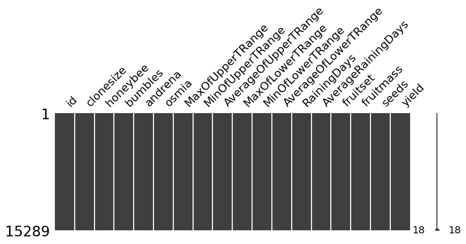
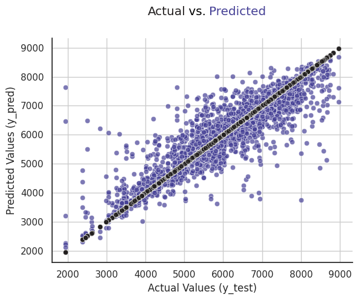

# basic libraries
import numpy as np
import pandas as pd
import requests
import os
import matplotlib.pyplot as plt
import seaborn as sns
# For Identifing Outliers
from scipy import stats
# For Identifing Correlation Coefficient & P-value
from scipy.stats import pearsonr
# To Check Missing Values
import missingno as msno
# To avoi warnings
import warnings
warnings.filterwarnings("ignore")
![]()
TL;DR 🤓
In this project, I went through many steps to accomplish the main goal: Build a ML Model to predict how much of Wild Blueberry will it yield based on the combinations of some features. I trained & evaluate 06 ML Algorithms for this task: Ridge, LinearRegression, SVR, DecisionTreeRegressor, RandomForestRegressor, XGBRegressor . In the end, the chosen one which provided the best results was RandomForestRegressor.
There was not much to do in terms of pre-processing since all features were numerical. I just check for missing values & Outliers to validate it’s a tidy dataset.
Next, I make some Exploratory Data Analysis to understand a bit more about the target (univariable Analysis) and the relation with its features (multivariable Analysis).
Then, I standarize by scaling all features in order to surpress the impact of values with high magnitude.
After all this, I split the data and trained the 06 models. Then, I use k-fold cross validation to compared them out to find out wich on gives better results. At the end, XGBRegressor ended up being the best model, so I try to enhance it by finding the best params combination, I included them and fit it for the last time.
Finally, I use the trained model on the test data provided and save its predictions. I also save the model to reuse it later. For explainability purpose, I plot a bar chart to show the ranking of the most important features for the model and its yield prediction.
Happy learning! 😊
Problem Undestanding ❓
What’s the problem? 🤔
The goal is to train a model that can predict Wild Blueberry Yield, This, will return how much yield is expected based on certain attributes that might influence it. Since the Amount of Wild Blueberry to be yielded is a continuous variable, we are dealing with a Regression Problem.
Data columns:
- Clonesize m2: average blueberry clone size in the field
- Honeybee bees/m2/min: Honeybee density in the field
- Bumbles bees/m2/min: Bumblebee density in the field
- Andrena bees/m2/min: Andrena bee density in the field
- Osmia bees/m2/min: Osmia bee density in the field
- MaxOfUpperTRange ℃: highest record of the upper band daily air temperature during the bloom season
- MinOfUpperTRange ℃: lowest record of the upper band daily air temperature
- AverageOfUpperTRange ℃: average of the upper band daily air temperature
- MaxOfLowerTRange ℃: highest record of the lower band daily air temperature
- MinOfLowerTRange ℃: lowest record of the lower band daily air temperature
- AverageOfLowerTRange ℃: average of the lower band daily air temperature
- RainingDays Day: total number of days during the bloom season, each of which has precipitation larger than zero
- AverageRainingDays Day: average of raining days of the entire bloom season
What & How to measure KPI? 🎯
R-Squared (R² or the coefficient of determination) is the choosen metric for evaluating how good the model is at predicting Wild Blueberry Yield. But I also used Mean Squared Error & Root Mean Squared Error for comparison purpuses.
R^2 score shows how well terms (data points) fit a curve or line. R^2 is a statistical measure between 0 and 1 which calculates how similar a regression line is to the data it’s fitted to.
Setting Things Up ⚙
Importing Libraries 🧰
Here it’s imported all the libraries requiered for each process of the project.
# For Data Engineering
from sklearn.preprocessing import StandardScaler
# For Splitting data
from sklearn.model_selection import train_test_split# For Building Predicting Models
from sklearn.linear_model import Ridge
from sklearn.linear_model import LinearRegression
from sklearn.svm import SVR
from sklearn.tree import DecisionTreeRegressor
from sklearn.ensemble import RandomForestRegressor
from xgboost import XGBRegressor# For Evaluating Predictive Models Using Metrics
from sklearn.metrics import mean_squared_error, r2_score
# For Optimizing any Model by Finding the Best Hyperparameters
from sklearn.model_selection import GridSearchCV
# For Evaluating Predictive Models By Using K-Fold Cross Validation
from sklearn.model_selection import cross_val_score, KFold
# For Saving the model
import joblibCustomized Settings 🎨
Bellow, there is a function that customizes some of the default graph parameters to make them look a bit cleaner and easy to digest.
g=''
def ChartWithCustomSettings(graph=g, figW=6, figH=4, title='Title'):
graph.figure.set_figwidth(figW)
graph.figure.set_figheight(figH)
sns.set_theme(style='white', palette='blend:#464196,#d9d9d9')
sns.despine() #left=True
g.set(ylabel=None)
plt.title(title, pad=15)This chunk of code just show a pallet with the colors used in this projec’s graphs
sns.palplot(['#221f1f', '#d9d9d9', '#464196'])
plt.title('Custom Palette', loc='left', fontfamily='Sans Serif', fontsize=12, y=1.2)
plt.show()Extract & Load Data 🗃️
Here you can find the Dataset used in this project: https://www.kaggle.com/competitions/playground-series-s3e14/overview
The dataset came in two files containing Training and Test Data
# Loading Training and Test Data
train_data = pd.read_csv('train.csv')
test_data = pd.read_csv('test.csv')
train_data.head(3)| id | clonesize | honeybee | bumbles | andrena | osmia | MaxOfUpperTRange | MinOfUpperTRange | AverageOfUpperTRange | MaxOfLowerTRange | MinOfLowerTRange | AverageOfLowerTRange | RainingDays | AverageRainingDays | fruitset | fruitmass | seeds | yield | |
|---|---|---|---|---|---|---|---|---|---|---|---|---|---|---|---|---|---|---|
| 0 | 0 | 25.0 | 0.50 | 0.25 | 0.75 | 0.50 | 69.7 | 42.1 | 58.2 | 50.2 | 24.3 | 41.2 | 24.0 | 0.39 | 0.425011 | 0.417545 | 32.460887 | 4476.81146 |
| 1 | 1 | 25.0 | 0.50 | 0.25 | 0.50 | 0.50 | 69.7 | 42.1 | 58.2 | 50.2 | 24.3 | 41.2 | 24.0 | 0.39 | 0.444908 | 0.422051 | 33.858317 | 5548.12201 |
| 2 | 2 | 12.5 | 0.25 | 0.25 | 0.63 | 0.63 | 86.0 | 52.0 | 71.9 | 62.0 | 30.0 | 50.8 | 24.0 | 0.39 | 0.552927 | 0.470853 | 38.341781 | 6869.77760 |
Data Pre-processing 🧼
Checking For Missing Values
Let’s first check the number of Missing Values for each feature
# Show Total Missing Values in Percentage Format
train_data.isnull().sum()/train_data.shape[0]*100id 0.0
clonesize 0.0
honeybee 0.0
bumbles 0.0
andrena 0.0
osmia 0.0
MaxOfUpperTRange 0.0
MinOfUpperTRange 0.0
AverageOfUpperTRange 0.0
MaxOfLowerTRange 0.0
MinOfLowerTRange 0.0
AverageOfLowerTRange 0.0
RainingDays 0.0
AverageRainingDays 0.0
fruitset 0.0
fruitmass 0.0
seeds 0.0
yield 0.0
dtype: float64We can also use a plot to visualize Missing Values
msno.matrix(train_data, figsize=(10, 3))
Checking For Proper Data Type
train_data.dtypesid int64
clonesize float64
honeybee float64
bumbles float64
andrena float64
osmia float64
MaxOfUpperTRange float64
MinOfUpperTRange float64
AverageOfUpperTRange float64
MaxOfLowerTRange float64
MinOfLowerTRange float64
AverageOfLowerTRange float64
RainingDays float64
AverageRainingDays float64
fruitset float64
fruitmass float64
seeds float64
yield float64
dtype: objectLet’s figuring out what features are numerical or categorical. Beware that some integer-valued features could actually be categorical features, and some categorical features could be text features.
numerical_features = train_data.select_dtypes(include=np.number).columns
print('Numerical columns:', numerical_features)
print('')
categorical_features = train_data.select_dtypes(include='object').columns
print('Categorical columns:', categorical_features)Numerical columns: Index(['id', 'clonesize', 'honeybee', 'bumbles', 'andrena', 'osmia',
'MaxOfUpperTRange', 'MinOfUpperTRange', 'AverageOfUpperTRange',
'MaxOfLowerTRange', 'MinOfLowerTRange', 'AverageOfLowerTRange',
'RainingDays', 'AverageRainingDays', 'fruitset', 'fruitmass', 'seeds',
'yield'],
dtype='object')
Categorical columns: Index([], dtype='object')Seems like all features are numerical, and based on its values, we can confirm they have the proper data type. Let’s move on to the next part.
Identifing Outliers
There are a few values lying outside a normal range
g=sns.catplot(data=train_data, y='yield', kind='violin')
ChartWithCustomSettings(g, 3, 5, 'Yield Distribution')Let’s use Z-score to check if they are above the usual threshold level
z= np.abs(stats.zscore(train_data['yield']))
outliers = len(np.where(z >= 3)[0])
print(f'There were found {outliers} outliers')There were found 26 outliersBackup
data_pre_processed = train_data.copy()Exploratory Data Analysis 📊
In this section we analized in three ways: - General statistics of the dataset - Visualizing Each Feature (Univariate Analysis) - Visualizing multiple Features at the same time (Multivariate Analysis) and its correlation
General View of the Dataset 🧮
data_pre_processed.sample(5)| id | clonesize | honeybee | bumbles | andrena | osmia | MaxOfUpperTRange | MinOfUpperTRange | AverageOfUpperTRange | MaxOfLowerTRange | MinOfLowerTRange | AverageOfLowerTRange | RainingDays | AverageRainingDays | fruitset | fruitmass | seeds | yield | |
|---|---|---|---|---|---|---|---|---|---|---|---|---|---|---|---|---|---|---|
| 11553 | 11553 | 25.0 | 0.50 | 0.25 | 0.50 | 0.63 | 86.0 | 52.0 | 71.9 | 62.0 | 30.0 | 50.8 | 24.0 | 0.39 | 0.466279 | 0.434133 | 34.660573 | 5329.26320 |
| 3198 | 3198 | 25.0 | 0.50 | 0.25 | 0.50 | 0.63 | 94.6 | 57.2 | 79.0 | 68.2 | 33.0 | 55.9 | 24.0 | 0.39 | 0.481329 | 0.438613 | 34.971315 | 5504.75083 |
| 8536 | 8536 | 25.0 | 0.50 | 0.25 | 0.63 | 0.50 | 86.0 | 52.0 | 71.9 | 62.0 | 30.0 | 50.8 | 16.0 | 0.26 | 0.583698 | 0.494589 | 40.351186 | 5200.57849 |
| 15125 | 15125 | 12.5 | 0.25 | 0.25 | 0.63 | 0.63 | 69.7 | 42.1 | 58.2 | 50.2 | 24.3 | 41.2 | 16.0 | 0.26 | 0.467905 | 0.411272 | 33.221987 | 5807.00693 |
| 4824 | 4824 | 25.0 | 0.50 | 0.38 | 0.63 | 0.75 | 86.0 | 52.0 | 71.9 | 62.0 | 30.0 | 50.8 | 24.0 | 0.39 | 0.559215 | 0.476536 | 38.171597 | 7778.34916 |
data_pre_processed.info()<class 'pandas.core.frame.DataFrame'>
RangeIndex: 15289 entries, 0 to 15288
Data columns (total 18 columns):
# Column Non-Null Count Dtype
--- ------ -------------- -----
0 id 15289 non-null int64
1 clonesize 15289 non-null float64
2 honeybee 15289 non-null float64
3 bumbles 15289 non-null float64
4 andrena 15289 non-null float64
5 osmia 15289 non-null float64
6 MaxOfUpperTRange 15289 non-null float64
7 MinOfUpperTRange 15289 non-null float64
8 AverageOfUpperTRange 15289 non-null float64
9 MaxOfLowerTRange 15289 non-null float64
10 MinOfLowerTRange 15289 non-null float64
11 AverageOfLowerTRange 15289 non-null float64
12 RainingDays 15289 non-null float64
13 AverageRainingDays 15289 non-null float64
14 fruitset 15289 non-null float64
15 fruitmass 15289 non-null float64
16 seeds 15289 non-null float64
17 yield 15289 non-null float64
dtypes: float64(17), int64(1)
memory usage: 2.1 MBdata_pre_processed.describe().T| count | mean | std | min | 25% | 50% | 75% | max | |
|---|---|---|---|---|---|---|---|---|
| id | 15289.0 | 7644.000000 | 4413.698468 | 0.000000 | 3822.000000 | 7644.000000 | 11466.000000 | 15288.000000 |
| clonesize | 15289.0 | 19.704690 | 6.595211 | 10.000000 | 12.500000 | 25.000000 | 25.000000 | 40.000000 |
| honeybee | 15289.0 | 0.389314 | 0.361643 | 0.000000 | 0.250000 | 0.500000 | 0.500000 | 18.430000 |
| bumbles | 15289.0 | 0.286768 | 0.059917 | 0.000000 | 0.250000 | 0.250000 | 0.380000 | 0.585000 |
| andrena | 15289.0 | 0.492675 | 0.148115 | 0.000000 | 0.380000 | 0.500000 | 0.630000 | 0.750000 |
| osmia | 15289.0 | 0.592355 | 0.139489 | 0.000000 | 0.500000 | 0.630000 | 0.750000 | 0.750000 |
| MaxOfUpperTRange | 15289.0 | 82.169887 | 9.146703 | 69.700000 | 77.400000 | 86.000000 | 86.000000 | 94.600000 |
| MinOfUpperTRange | 15289.0 | 49.673281 | 5.546405 | 39.000000 | 46.800000 | 52.000000 | 52.000000 | 57.200000 |
| AverageOfUpperTRange | 15289.0 | 68.656256 | 7.641807 | 58.200000 | 64.700000 | 71.900000 | 71.900000 | 79.000000 |
| MaxOfLowerTRange | 15289.0 | 59.229538 | 6.610640 | 50.200000 | 55.800000 | 62.000000 | 62.000000 | 68.200000 |
| MinOfLowerTRange | 15289.0 | 28.660553 | 3.195367 | 24.300000 | 27.000000 | 30.000000 | 30.000000 | 33.000000 |
| AverageOfLowerTRange | 15289.0 | 48.568500 | 5.390545 | 41.200000 | 45.800000 | 50.800000 | 50.800000 | 55.900000 |
| RainingDays | 15289.0 | 18.660865 | 11.657582 | 1.000000 | 16.000000 | 16.000000 | 24.000000 | 34.000000 |
| AverageRainingDays | 15289.0 | 0.324176 | 0.163905 | 0.060000 | 0.260000 | 0.260000 | 0.390000 | 0.560000 |
| fruitset | 15289.0 | 0.502741 | 0.074390 | 0.192732 | 0.458246 | 0.506600 | 0.560445 | 0.652144 |
| fruitmass | 15289.0 | 0.446553 | 0.037035 | 0.311921 | 0.419216 | 0.446570 | 0.474134 | 0.535660 |
| seeds | 15289.0 | 36.164950 | 4.031087 | 22.079199 | 33.232449 | 36.040675 | 39.158238 | 46.585105 |
| yield | 15289.0 | 6025.193999 | 1337.056850 | 1945.530610 | 5128.163510 | 6117.475900 | 7019.694380 | 8969.401840 |
data_pre_processed.nunique()id 15289
clonesize 6
honeybee 7
bumbles 11
andrena 16
osmia 14
MaxOfUpperTRange 6
MinOfUpperTRange 5
AverageOfUpperTRange 5
MaxOfLowerTRange 6
MinOfLowerTRange 7
AverageOfLowerTRange 5
RainingDays 6
AverageRainingDays 8
fruitset 1526
fruitmass 1515
seeds 2066
yield 776
dtype: int64Let’s Analyze each Feature 💡
Univariate Analysis
We can observe that Yield (the target) has a slightly left-skewed distribution
g=sns.histplot(data_pre_processed['yield'], bins=20, kde=True, stat='density', linewidth=0)
ChartWithCustomSettings(g, 6, 4, 'Yield Distribution')
plt.xlabel('')
# Ploting the mean line
mean = data_pre_processed['yield'].mean()
plt.axvline(mean, 0, 1, color='lightgray', label='mean')How They Behave if We Put Them Together? 🤔
Bivariate Analysis
Numerical Predictors and Target
g=sns.catplot(data=data_pre_processed, x='RainingDays', y='yield', estimator=np.mean, kind='violin')
ChartWithCustomSettings(g, 5, 4, 'Yield Distribution By RainingDays')Now let’s visualize the correlation between each pair of variable.
As we can see, these features 'MaxOfUpperTRange', 'MinOfLowerTRange', 'AverageRainingDays' have high correlation almost or equal to 1. Let’s leave them for now, but keep in mind that these can be removed to avoid adding complexity to the model.
# Calculate correlation between each pair of variable
corr = data_pre_processed.drop('id', axis=1).corr()
# Generate a mask for the upper triangle
mask = np.zeros_like(corr, dtype=bool)
mask[np.triu_indices_from(mask)] = True
# Inserir a figura
f, ax = plt.subplots(figsize=(11, 11))
cmap = sns.diverging_palette(10, 220, as_cmap=True)
# Draw the heatmap with the mask
ax = sns.heatmap(corr,
mask=mask,
cmap=cmap,
center=0,
annot=True,
annot_kws= {'size':8},
square=True,
xticklabels=True,
yticklabels=True,
linewidths=.5,
cbar_kws={'shrink': .5},
ax=ax
)
ax.set_title('Correlation between variables', fontsize=12);We can observe there is a positive correlation between Fruitset and Yield
sns.regplot(data=data_pre_processed, x='fruitset', y='yield', line_kws={'color': '#221f1f'})
ChartWithCustomSettings(g, 5, 4, 'Fruitset vs. Yield')
plt.xlabel('Fruitset')
plt.ylabel('Yield')Text(0, 0.5, 'Yield')Now, let’s find out what’s the coefficient between fruitset and yield
high_correlation_features = data_pre_processed[['seeds', 'fruitset', 'fruitmass']]
target_var = 'yield'
for col in high_correlation_features:
coefficent, p_value = pearsonr(high_correlation_features[col], data_pre_processed[target_var])
# print(coefficent.round(3), p_value)
print(f"The correlation coefficient between {col} and {target_var} is {coefficent.round(3)} and the pvlaue is {p_value}")
print()The correlation coefficient between fruitmass and yield is 0.826 and the pvlaue is 0.0
Feature Transformation 🔪
Once we’re done with EDA, we can start shaping the dataset ready to be used in the models
Remove Unnecesary Columns
First, let’s remember the dataset structure
# Show a sample of the current dataset
data_pre_processed.sample(3)| id | clonesize | honeybee | bumbles | andrena | osmia | MaxOfUpperTRange | MinOfUpperTRange | AverageOfUpperTRange | MaxOfLowerTRange | MinOfLowerTRange | AverageOfLowerTRange | RainingDays | AverageRainingDays | fruitset | fruitmass | seeds | yield | |
|---|---|---|---|---|---|---|---|---|---|---|---|---|---|---|---|---|---|---|
| 9799 | 9799 | 12.5 | 0.25 | 0.25 | 0.75 | 0.63 | 77.4 | 46.8 | 64.7 | 55.8 | 27.0 | 45.8 | 24.0 | 0.39 | 0.567976 | 0.480779 | 39.646691 | 7163.94410 |
| 11565 | 11565 | 12.5 | 0.25 | 0.25 | 0.25 | 0.75 | 86.0 | 52.0 | 71.9 | 62.0 | 30.0 | 50.8 | 24.0 | 0.39 | 0.447781 | 0.424874 | 33.116091 | 5085.84473 |
| 11829 | 11829 | 25.0 | 0.50 | 0.25 | 0.38 | 0.75 | 86.0 | 52.0 | 71.9 | 62.0 | 30.0 | 50.8 | 34.0 | 0.56 | 0.462743 | 0.428118 | 33.441606 | 5772.91016 |
Everything but id column are okey. Let’s remove it
# Remove unnecesary columns
data_pre_processed.drop(columns=['id'], inplace=True)
data_pre_processed.head(3)| clonesize | honeybee | bumbles | andrena | osmia | MaxOfUpperTRange | MinOfUpperTRange | AverageOfUpperTRange | MaxOfLowerTRange | MinOfLowerTRange | AverageOfLowerTRange | RainingDays | AverageRainingDays | fruitset | fruitmass | seeds | yield | |
|---|---|---|---|---|---|---|---|---|---|---|---|---|---|---|---|---|---|
| 0 | 25.0 | 0.50 | 0.25 | 0.75 | 0.50 | 69.7 | 42.1 | 58.2 | 50.2 | 24.3 | 41.2 | 24.0 | 0.39 | 0.425011 | 0.417545 | 32.460887 | 4476.81146 |
| 1 | 25.0 | 0.50 | 0.25 | 0.50 | 0.50 | 69.7 | 42.1 | 58.2 | 50.2 | 24.3 | 41.2 | 24.0 | 0.39 | 0.444908 | 0.422051 | 33.858317 | 5548.12201 |
| 2 | 12.5 | 0.25 | 0.25 | 0.63 | 0.63 | 86.0 | 52.0 | 71.9 | 62.0 | 30.0 | 50.8 | 24.0 | 0.39 | 0.552927 | 0.470853 | 38.341781 | 6869.77760 |
Scaling Data
Standardize the dataset using Feature Scaling
As we see in the Distribution Charts, there are some values with high magnitude which could cause data leakage. So, to supress this effect, we need to normalize its range of all numerical features. This can be acheived by using Feature Scaling
But first, let’s make a backup copy
before_scaling_data = data_pre_processed.copy()
before_scaling_data.head(3)| clonesize | honeybee | bumbles | andrena | osmia | MaxOfUpperTRange | MinOfUpperTRange | AverageOfUpperTRange | MaxOfLowerTRange | MinOfLowerTRange | AverageOfLowerTRange | RainingDays | AverageRainingDays | fruitset | fruitmass | seeds | yield | |
|---|---|---|---|---|---|---|---|---|---|---|---|---|---|---|---|---|---|
| 0 | 25.0 | 0.50 | 0.25 | 0.75 | 0.50 | 69.7 | 42.1 | 58.2 | 50.2 | 24.3 | 41.2 | 24.0 | 0.39 | 0.425011 | 0.417545 | 32.460887 | 4476.81146 |
| 1 | 25.0 | 0.50 | 0.25 | 0.50 | 0.50 | 69.7 | 42.1 | 58.2 | 50.2 | 24.3 | 41.2 | 24.0 | 0.39 | 0.444908 | 0.422051 | 33.858317 | 5548.12201 |
| 2 | 12.5 | 0.25 | 0.25 | 0.63 | 0.63 | 86.0 | 52.0 | 71.9 | 62.0 | 30.0 | 50.8 | 24.0 | 0.39 | 0.552927 | 0.470853 | 38.341781 | 6869.77760 |
Now we normalize the data by using StandardScaler(). We’ll get all numerical features with proper magnitude.
# Splitting the data
X_before_scaling = before_scaling_data.drop('yield', axis=1)
y = before_scaling_data['yield']
# Initialise the Scaler
scaler = StandardScaler()
# Scale the training dataset
X = scaler.fit_transform(X_before_scaling)
# Convert the NumPy array back to a Pandas DataFrame
X = pd.DataFrame(X, columns=X_before_scaling.columns)
X.head(3)| clonesize | honeybee | bumbles | andrena | osmia | MaxOfUpperTRange | MinOfUpperTRange | AverageOfUpperTRange | MaxOfLowerTRange | MinOfLowerTRange | AverageOfLowerTRange | RainingDays | AverageRainingDays | fruitset | fruitmass | seeds | |
|---|---|---|---|---|---|---|---|---|---|---|---|---|---|---|---|---|
| 0 | 0.802929 | 0.306073 | -0.613664 | 1.737386 | -0.662120 | -1.363365 | -1.365484 | -1.368341 | -1.365954 | -1.364693 | -1.366975 | 0.458012 | 0.401611 | -1.044938 | -0.783260 | -0.918905 |
| 1 | 0.802929 | 0.306073 | -0.613664 | 0.049454 | -0.662120 | -1.363365 | -1.365484 | -1.368341 | -1.365954 | -1.364693 | -1.366975 | 0.458012 | 0.401611 | -0.777454 | -0.661588 | -0.572230 |
| 2 | -1.092448 | -0.385238 | -0.613664 | 0.927179 | 0.269883 | 0.418756 | 0.419514 | 0.424487 | 0.419105 | 0.419198 | 0.413979 | 0.458012 | 0.401611 | 0.674659 | 0.656157 | 0.540029 |
Last step of this process is splitting the data into train & test set to get ready for fitting it to the models
# Splitting the data into train & test set
X_train, X_test, y_train, y_test = train_test_split(X, y, test_size=0.2, random_state=42)
print(X_train.shape, X_test.shape)(12231, 16) (3058, 16)Building & Evaluating Model(s) 🤖👨‍🏫
Building
Let’s start by definning which machine learning models will be used
# Dictionary of machine learning models that will be trained
models = {
'Ridge': Ridge(),
'LinearRegression': LinearRegression(),
'SVR': SVR(),
'DecisionTreeRegressor': DecisionTreeRegressor(),
'RandomForestRegressor': RandomForestRegressor(),
'XGBRegressor': XGBRegressor()
}Then we can create a function to fit and score models all at once
# Create a fit_and_score function
def fit_and_score(models, X_train, X_test, y_train, y_test):
"""
Fits and evaluates given machine learning models.
models : a dict of different Scikit-Learn machine learning models
X_train : training data
X_test : testing data
y_train : labels assosciated with training data
y_test : labels assosciated with test data
"""
# Random seed for reproducible results
np.random.seed(42)
# Make a list to keep model scores
results = []
# Loop through models
for name, model in models.items():
# Fit/Train the model to the data
model.fit(X_train, y_train)
# Make Predictions
y_pred = model.predict(X_test)
# Evaluate the model and append its score to model_scores
R2_score = model.score(X_test, y_test) # By default it uses R2_score
MSE = mean_squared_error(y_test, y_pred)
RMSE = mean_squared_error(y_test, y_pred, squared=False)
# Add all metrics of model to a list
results.append((name, R2_score, MSE, RMSE))
return resultsLet’s call our function with all parameters needed
model_scores = fit_and_score(models=models,
X_train=X_train,
X_test=X_test,
y_train=y_train,
y_test=y_test)Evaluating Models
Once the models are trained, we evaluate its performance using R-Squared which is the choosen metric for evaluating how good the model is at predicting Wild Blueberry Yield. But I also used Mean Squared Error & Root Mean Squared Error for comparison purpuses.
It seems like RandomForestRegressor is the best one, but let’s try using K-Fold cross-validation just to make sure its accuracy is correct.
# Dataframe with metrics of all trained models
results_df = pd.DataFrame(model_scores, columns = ['Model', 'R2_score', 'MSE', 'RMSE'])
# Add highlights in the dataframe to display best (green) and worst (red) performing models
results_format_df = results_df.style.highlight_max(subset = ['R2_score', 'RMSE'], color = 'green').highlight_min(subset = ['MSE'], color = 'green').highlight_max(subset = ['MSE'], color = 'red').highlight_min(subset = ['R2_score','RMSE'], color = 'red')
display(results_format_df)| Model | R2_score | MSE | RMSE | |
|---|---|---|---|---|
| 0 | Ridge | 0.810383 | 333333.676304 | 577.350566 |
| 1 | LinearRegression | 0.810477 | 333169.787774 | 577.208617 |
| 2 | SVR | 0.501955 | 875531.280527 | 935.698285 |
| 3 | DecisionTreeRegressor | 0.635033 | 641589.017464 | 800.992520 |
| 4 | RandomForestRegressor | 0.812783 | 329114.664203 | 573.685161 |
| 5 | XGBRegressor | 0.806708 | 339795.291480 | 582.919627 |
Evaluating Model Using K-Fold Cross Validation
This method is used to estimate the skill of a machine learning model on unseen data. It will evaluate the model multiple times so you can be more confident about the model design. k value is how many samples the data will split. The choice of k is usually 5 or 10, being 10 the most common in the field of applied machine learning, but there is no formal rule.
Utilizing K-Fold cross-validation, Random Forest still remains as the best model.
# Make a list to keep model scores
results = []
# Loop through models
for name, model in models.items():
# Fit/Train the model to the data
model.fit(X_train, y_train)
# Make Predictions
y_pred = model.predict(X_test)
# Evaluate the model and append its score to model_scores
R2_score = model.score(X_test, y_test)
MSE = mean_squared_error(y_test, y_pred)
RMSE = mean_squared_error(y_test, y_pred, squared=False)
# Add all metrics of model to a list
results.append((name, R2_score, MSE, RMSE))
print(name)
kf = KFold(n_splits = 10, shuffle = True, random_state=42)
scores = cross_val_score(model, X, y, cv = kf) # scoring="score" by default
# Print out the Mean CV scores & Standard deviation for each model
print("%0.2f accuracy with a standard deviation of %0.2f" % (scores.mean(), scores.std()))
print('=' * 30)Ridge
0.81 accuracy with a standard deviation of 0.01
==============================
LinearRegression
0.81 accuracy with a standard deviation of 0.01
==============================
SVR
0.54 accuracy with a standard deviation of 0.01
==============================
DecisionTreeRegressor
0.62 accuracy with a standard deviation of 0.02
==============================
RandomForestRegressor
0.81 accuracy with a standard deviation of 0.01
==============================
XGBRegressor
0.81 accuracy with a standard deviation of 0.02
==============================Comparing Models
After doing k-fold validation, we could verify that RandomForestRegressor is the best model with an accuracy of 81% and a standard deviation of 1%.
# Dataframe consisting of metrics of all the models
result_df = pd.DataFrame(results, columns = ['Model', 'R2_score', 'MSE', 'RMSE'])
# Add highlights in the dataframe to display best (green) and worst (red) performing models
result_format_df = result_df.style.highlight_max(subset = ['R2_score','RMSE'], color = 'green').highlight_min(subset = ['MSE'], color = 'green').highlight_max(subset = ['MSE'], color = 'red').highlight_min(subset = ['R2_score','RMSE'], color = 'red')
display(result_format_df)| Model | R2_score | MSE | RMSE | |
|---|---|---|---|---|
| 0 | Ridge | 0.810383 | 333333.676304 | 577.350566 |
| 1 | LinearRegression | 0.810477 | 333169.787774 | 577.208617 |
| 2 | SVR | 0.501955 | 875531.280527 | 935.698285 |
| 3 | DecisionTreeRegressor | 0.618634 | 670417.767968 | 818.790430 |
| 4 | RandomForestRegressor | 0.811807 | 330831.068699 | 575.179162 |
| 5 | XGBRegressor | 0.806708 | 339795.291480 | 582.919627 |
Hyperparameter Tuning
Now that we find out which model is the best for this scenario with the data we have, let’s try tunning a bit more the models by using Hyperparameter Tuning throughout GridSearchCV.
In this case we use Grid Search method to try several combinations. But, when the hyperparameter search space is large is a tedious task. So, instead we can use, Randomized Search It is an efficient method.
model_params = [
{'alpha': [0.1, 1.0, 10.0]}, # Ridge parameters
{}, # LinearRegression doesn't require hyperparameters here
{}, # SVR doesn't require hyperparameters here
{}, # DecisionTreeRegressor doesn't require hyperparameters here
{'n_estimators': [10, 50, 100]}, # RandomForestRegressor parameters
{'n_estimators': [50, 100, 200], 'learning_rate': [0.1, 0.5, 1.0]} # XGBRegressor parameters
]Here, we performed Hyperparameter Tuning on multiple Regression Models to finally find out the best model
scores = []
best_estimators = {}
for name, model, params in zip(models.keys(), models.values(), model_params):
clf = GridSearchCV(model, params, cv=5, return_train_score=False)
clf.fit(X_train, y_train)
scores.append({
'model': name,
'best_score': clf.best_score_,
'best_params': clf.best_params_
})
best_estimators[model] = clf.best_estimator_
results = pd.DataFrame(scores, columns=['model', 'best_score', 'best_params'])
results| model | best_score | best_params | |
|---|---|---|---|
| 0 | Ridge | 0.808868 | {'alpha': 10.0} |
| 1 | LinearRegression | 0.807210 | {} |
| 2 | SVR | 0.462866 | {} |
| 3 | DecisionTreeRegressor | 0.628891 | {} |
| 4 | RandomForestRegressor | 0.807681 | {'n_estimators': 100} |
| 5 | XGBRegressor | 0.819147 | {'learning_rate': 0.1, 'n_estimators': 50} |
Again, we train our model but now with the best hyperparameter previously found and get once again its scores of evaluation metrics.
best_model=RandomForestRegressor(n_estimators=100)
best_model.fit(X_train,y_train)
y_pred=best_model.predict(X_test)
R2_score = model.score(X_test, y_test)
MSE = mean_squared_error(y_test, y_pred)
RMSE = mean_squared_error(y_test, y_pred, squared=False)
print("R2_score:", R2_score)
print("MSE:", MSE)
print("RMSE:", RMSE)R2_score: 0.8067077856896194
MSE: 333042.17478148366
RMSE: 577.0980634012591Here, we plotted the results of our best model (predicted), against the original results (actual).
# Show Actual vs. Predicted Values
sns.scatterplot(x=y_test, y=y_pred, alpha=0.7, color='#464196')
sns.scatterplot(x=y_test, y=y_test, alpha=0.7, color='#221f1f')
plt.xlabel('Actual Values (y_test)')
plt.ylabel('Predicted Values (y_pred)')
plt.figtext(0.47, 0.96, 'Actual', fontsize='large', color='#221f1f', ha ='right')
plt.figtext(0.53, 0.96, 'Predicted', fontsize='large', color='#464196', ha ='left')
plt.figtext(0.50, 0.96, ' vs. ', fontsize='large', color='k', ha ='center')
sns.despine()
plt.grid(True)
Using the model with Unseen data
First, let’s import the Unseen data
# Loading unseen data
test_data = pd.read_csv('test.csv')
# Saving id of data
test_data_id = test_data['id']
# Remove unnecesary columns
test_data.drop(columns=['id'], inplace=True)
test_data.sample(3)| clonesize | honeybee | bumbles | andrena | osmia | MaxOfUpperTRange | MinOfUpperTRange | AverageOfUpperTRange | MaxOfLowerTRange | MinOfLowerTRange | AverageOfLowerTRange | RainingDays | AverageRainingDays | fruitset | fruitmass | seeds | |
|---|---|---|---|---|---|---|---|---|---|---|---|---|---|---|---|---|
| 3444 | 12.5 | 0.25 | 0.38 | 0.38 | 0.75 | 77.4 | 46.8 | 64.7 | 55.8 | 27.0 | 45.8 | 16.0 | 0.26 | 0.638323 | 0.527896 | 45.069192 |
| 3758 | 25.0 | 0.50 | 0.38 | 0.38 | 0.50 | 94.6 | 57.2 | 79.0 | 68.2 | 33.0 | 55.9 | 1.0 | 0.10 | 0.556302 | 0.472468 | 40.555019 |
| 2996 | 12.5 | 0.25 | 0.25 | 0.50 | 0.63 | 77.4 | 46.8 | 64.7 | 55.8 | 27.0 | 45.8 | 34.0 | 0.56 | 0.557251 | 0.480779 | 39.474324 |
Then, we nee to standarize it as we did with the training data
# Scale the training dataset
X_test = scaler.fit_transform(test_data)
# Convert the NumPy array back to a Pandas DataFrame
X_test = pd.DataFrame(X_test, columns=test_data.columns)
X_test.head(3)| clonesize | honeybee | bumbles | andrena | osmia | MaxOfUpperTRange | MinOfUpperTRange | AverageOfUpperTRange | MaxOfLowerTRange | MinOfLowerTRange | AverageOfLowerTRange | RainingDays | AverageRainingDays | fruitset | fruitmass | seeds | |
|---|---|---|---|---|---|---|---|---|---|---|---|---|---|---|---|---|
| 0 | 0.789503 | -0.363088 | -0.606503 | -1.628845 | -2.453506 | 0.414398 | 0.414768 | 0.420044 | 0.414636 | 0.414374 | 0.409109 | 0.466288 | 0.408256 | -1.371318 | -1.032509 | -1.179639 |
| 1 | -1.106867 | -0.363088 | -0.606503 | 1.745905 | 0.262907 | 1.353982 | 1.351365 | 1.348482 | 1.351655 | 1.352424 | 1.354337 | -1.486257 | -1.345772 | -0.184207 | -0.093898 | 0.176782 |
| 2 | -1.106867 | -0.363088 | -0.606503 | 0.935965 | 0.262907 | 0.414398 | 0.414768 | 0.420044 | 0.414636 | 0.414374 | 0.409109 | -0.212858 | -0.378032 | 1.091922 | 1.098780 | 0.970547 |
Finally, we can predict on this new data and save the predictions as a csv file
predictions = best_model.predict(X_test)
submission = pd.DataFrame({'id': test_data_id, 'yield': predictions})
submission.to_csv('RandomForestRegressor_submission.csv', index=False)Saving Model
A a last step, after developing the model, we need to save it for later uses.
# Save the model in the 'model' directory
model_dir = "../model"
if not os.path.exists(model_dir):
os.makedirs(model_dir)
model_path = os.path.join(model_dir, "random_forest.joblib")
joblib.dump(best_model, model_path)If we want to verify that the model was saved we can load it and try it out on new data:
# load, no need to initialize the loaded_rf
loaded_rf = joblib.load("./random_forest.joblib")
# Loading new data
new_data = pd.read_csv('new_data.csv')
# Use it to verify its working
loaded_rf.predict(new_data)Results Explanation
The following chart shows you the Feature importance on this data. What I mean by that is what features were most important when it comes to predicting Wild Blueberries Yield (target variable).
# Getting feature importance
feat_importance= {'importance': model.feature_importances_, 'features': X.columns}
# Parsing it into a dataframe
df=pd.DataFrame.from_dict(feat_importance)
df.sort_values(ascending=False, by=['importance'], inplace=True)
df=df.dropna()
# Plotting Feature Importance with all features
sns.barplot(x='importance', y='features', data=df, orient='h')
ChartWithCustomSettings(g, 6, 4, 'Feature Importance')
sns.despine(left=True)
plt.tight_layout()Getting only top 5 of the features by its importance in the model:
# Parsing it into a dataframe
importance_df=pd.DataFrame.from_dict(feat_importance)
importance_df.sort_values(ascending=False, by=['importance'], inplace=True)
importance_df=importance_df.dropna()
# Getting only top 5 features
importance_df=importance_df.nlargest(5, 'importance')
display(importance_df)
print(' ')
# Plotting only top 5 features
sns.barplot(x='importance', y='features', data=importance_df, orient='h')
ChartWithCustomSettings(g, 6, 4, 'Top 5 of features importance')
sns.despine(left=True)| importance | features | |
|---|---|---|
| 13 | 0.554793 | fruitset |
| 15 | 0.112663 | seeds |
| 8 | 0.090891 | MaxOfLowerTRange |
| 12 | 0.030018 | AverageRainingDays |
| 9 | 0.029331 | MinOfLowerTRange |
Next Steps 🔜
There is always room for improvement, and for this project these are some things tha could be done to improve its predictiveness of the model:
- Better Feature Engineering
- Better experiments with Scaling
- Feature Encoding if we add some categorical data
- Better Model Tuning by playing a bit more with its hyperparameters
- Removing Features with High Correlation
You’re Awesome 😍, you just reached the end of this post. If you have any questions just drop me a message on my LikedIn. Also, any suggestion or kudos would be quite appreciated. Did you find it useful? Check out my other posts here, I’m sure you’ll find something interesting 💡.
Share this post with your friends/colleagues, and if you are in a good mood, buy me a cup of coffee ☕. Nos vemos! 🏃💨